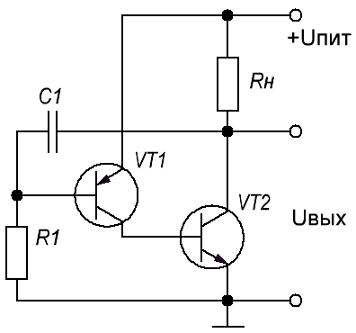

Несимметричный мультивибратор
Несимметричный мультивибратор состоит из усилительного каскада на двух транзисторах, охваченного положительной обратной связью: коллектор транзистора VT2 соединен с входом — с базой транзистора VT1 через конденсатор C1. В качестве нагрузки используется Rн. Транзистор VT1 прямой проводимости (p-n-p-типа), открывается при подаче на базу отрицательного относительно эмиттера потенциала. Транзистор VT2 обратной проводимости (n-p-n-типа), открывается при подаче на базу положительного относительно эмиттера потенциала.
Принцип работы несимметричного мультивибратора рассмотрим на примере схемы на рис. 1.

Рис. 1 - Схема мультивибратора на транзисторах
При включении питания конденсатор C1 заряжается через Rн и резистор R1. В результате его правая обкладка заряжается положительно, а левая - отрицательно. Этот потенциал попадает на базу VT1. Тогда транзистор VT1 открывается, сопротивление коллектор-эмиттер падает. База транзистора VT2 оказывается соединенной с положительным полюсом источника, транзистор VT2 также открывается, ток коллектора растет. В результате через Rн течет ток, который разряжает конденсатор C1 через резистор R1 и транзистор VT2 . Потенциал базы VT1 возрастает, транзистор VT1 закрывается, вызывая закрывание транзистора VT2. После этого конденсатор C1 снова начинает заряжаться и цикл повторяется.
Частота выходного сигнала зависит:
- от емкости С1 - чем она больше, тем больше времени нужно для его зарядки, т.е. частота уменьшается.
- от сопротивления R - чем они больше, тем меньше ток заряда конденсатора С1, тем дольше он будет заряжаться, т.е. частота будет уменьшаться. Изменяя сопротивление R1 можно в широких пределах менять частоту генератора.
- от напряжения питания - при повышении напряжения питания конденсатор С1 заряжается быстрее, т.е. частота увеличивается.
Источники
zen.yandex.ru - Узелки и узелочки. Несимметричные мультивибраторы.